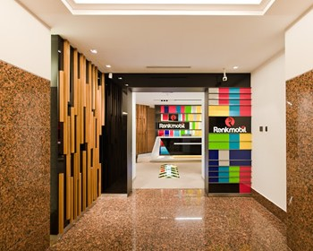
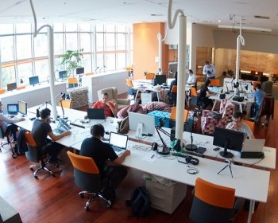

Cases de Sucesso
A IT Lab tem feito diferença em projetos de tecnologia para grandes empresas, como : Novartis, Santander, Itaú, AstraZeneca, Fnac, Johnson & Johnson, Atlas Schindler entre outros.
-
Robôs
-
Sistemas Departamentais
 -
Integração de Processos
-
Manutenção e Suporte
 -
CLM - Closed Loop Marketing
-
Apps. Field Force